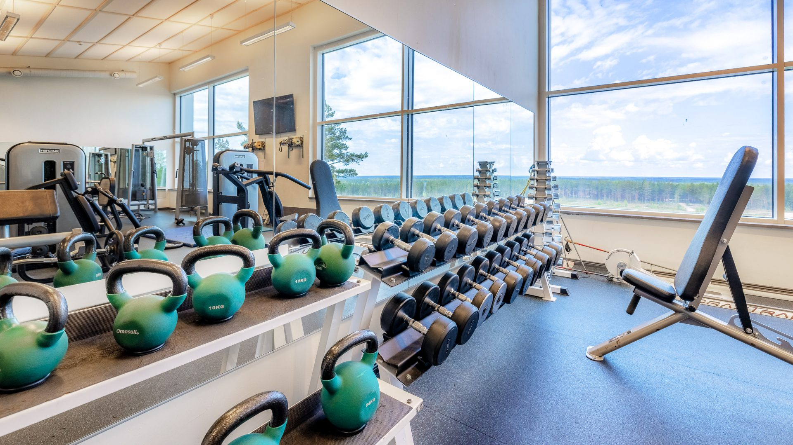

Keitä me olemme
Northwind Gym & Recovery on pohjoisessa asenteessa toimiva kuntosali ja palautumiskeskus, jossa kova harjoittelu ja viisas palautuminen kohtaavat.
Me uskomme, että todellinen suorituskyky rakennetaan tasapainolla siellä, missä pohjoinen sisu ja kehon huoltaminen yhdistyvät.
Tällä ideala Northwind on palvellut Vaasassa vuodesta 2010 lähtien.

Sijaintimme
Olemme Vaasassa, aivan keskustan tuntumassa, joten meille on helppo tulla niin julkisilla kuin omalla autollakin.
Osoitteemme on: Kuntokatu 1, 65100 Vaasa.
Meillä on myös runsaasti pysäköintitilaa asiakkaillemme.
Historia
Northwind Gym & Recovery perustettiin vuonna 2010, kun joukko intohimoisia kuntoilijoita ja hyvinvoinnin ammattilaisia päätti luoda tilan, joka yhdistäisi tehokkaan harjoittelun ja älykkään palautumisen.
Alusta alkaen Northwind on ollut sitoutunut tarjoamaan asiakkailleen parhaan mahdollisen ympäristön kehon ja mielen hyvinvoinnille. Vuosien varrella olemme laajentaneet palveluitamme ja päivittäneet tilojamme vastaamaan asiakkaidemme tarpeita.
